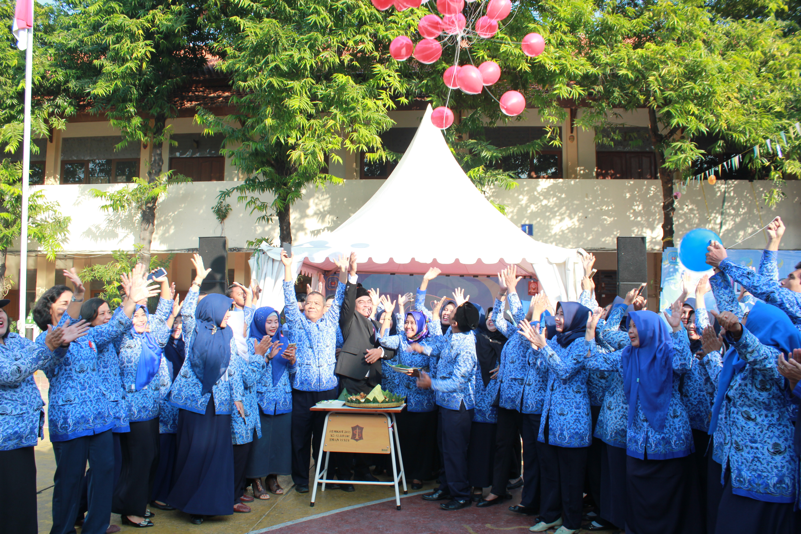

"Llego A Ganar — Datang Untuk Menang"
Lembaga pendidikan menengah atas unggulan di Surabaya Selatan yang berdedikasi mewujudkan generasi berkarakter kokoh, berwawasan global, unggul dalam sains dan teknologi, serta berakar pada nilai-nilai keimanan dan kepedulian lingkungan.
Pembelajaran komprehensif fase E & F dengan bimbingan riset, UTBK, dan kelanjutan studi ke PTN favorit.
Wadah kreativitas siswa melalui Libels Party, Libels Cup, dan kejuaraan DBL Jawa Timur.
Layanan e-Learning mandiri, laboratorium terstandar, dan fasilitas pembelajaran modern.

Salam sejahtera bagi seluruh warga besar SMAN 15 Surabaya, para alumni, orang tua wali murid, serta masyarakat luas pemerhati dunia pendidikan.
Sesuai visi kami, "Terwujudnya sekolah unggul, peduli dan berbudaya lingkungan serta berwawasan Nasional dan Global dengan mengedepankan IMTAK dan IPTEK", SMAN 15 Surabaya terus berbenah memberikan layanan pendidikan berstandar tinggi. Melalui slogan "Llego A Ganar", kami menanamkan mental juara, integritas kepribadian, serta kepekaan sosial pada diri setiap peserta didik.
Dedikasi puluhan tahun menghasilkan ribuan alumni berprestasi di perguruan tinggi negeri terbaik dan instansi terkemuka.
Pilar utama yang menjadikan SMAN 15 Surabaya sebagai sekolah rujukan berdaya saing tinggi.
Penghargaan tertinggi dalam budaya pelestarian lingkungan hidup, hemat energi, dan kawasan hijau asri yang mendukung suasana belajar nyaman.
KIR SMAN 15 secara konsisten melahirkan inovasi science tingkat nasional dengan pendampingan langsung oleh guru pembimbing bersertifikasi.
Ajang tahunan bergengsi kreasi seni siswa SMAN 15 (Libels Party) serta kompetisi olahraga (Libels Cup) yang menjadi barometer kreativitas pelajar di Jawa Timur.
Ikuti warta aktivitas, pencapaian prestasi, dan kalender kegiatan SMAN 15 Surabaya.

Pemberitahuan resmi pembagian rombongan belajar dan pemilihan mata pelajaran pilihan Fase F untuk siswa kelas XI SMAN 15 Surabaya.

Keluarga besar SMAN 15 Surabaya kembali mempersiapkan pentas seni tahunan legendaris Libels Party dengan deretan penampilan budaya dan musik.

Dewan guru dan staf SMAN 15 Surabaya mengikuti pembekalan metode asesmen berdiferensiasi untuk mengoptimalkan potensi siswa secara holistik.
Dapatkan panduan lengkap jalur zonasi, afirmasi, dan prestasi SMAN 15 Surabaya.